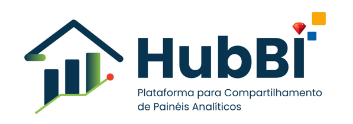
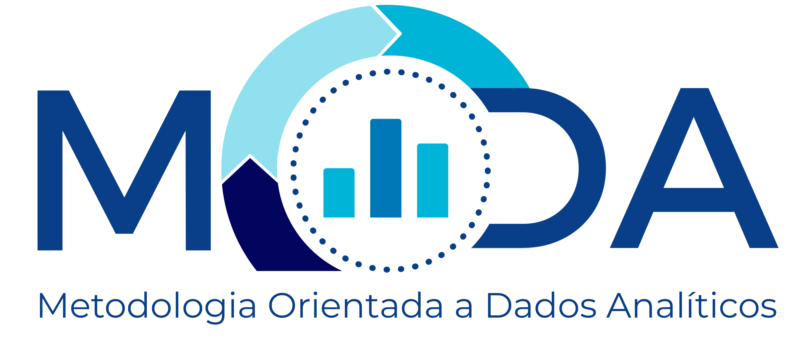

Estruturando a inteligência corporativa do Estado de Pernambuco através da gestão, padronização e compartilhamento seguro de dados governamentais.
Plataforma de processamento massivo de dados

Visualização e democratização de dados
Relatórios corporativos Power BI

Metodologia Orientada a Dados Analíticos
A Gerência de Governança de Dados (GDA), inserida no contexto da Agência Estadual de Tecnologia da Informação (ATI-PE), é uma área estratégica focada na gestão, padronização e compartilhamento de dados do Governo de Pernambuco.
Fazemos parte da estrutura que facilita o acesso e a análise de informações para a melhoria dos serviços públicos e organizando a inteligência corporativa do estado.
Implementação do modelo de informática pública focado em governança e qualidade
Promovendo transparência e disponibilizando dados para a sociedade
Suporte técnico na jornada digital dos órgãos estaduais
Transformar dados em decisões (Business Intelligence)
Favorecer Unidade de Informação (Governança, Confiabilidade, Segurança e Padronização)
Formentar a cultura de dados e a democratização da informação para a sociedade e órgãos públicos
Coordenação técnica para implementação do modelo de informática pública, focando em governança, qualidade, segurança e compartilhamento de ativos de dados.
Um ecossistema integrado para gestão, análise, compartilhamento e democratização dos dados governamentais.
Plataforma de Compartilhamento e Análise de Dados
Plataforma baseada em banco de dados analítico colunar (GreenPlum), projetada para processamento massivo de dados e análises avançadas.
Portal web para visualização e compartilhamento
Portal web que centraliza a visualização e o compartilhamento de painéis analíticos. Promove a cultura data-driven e transparência pública com baixo custo de licenciamento.
Power BI Report Server
Servidor corporativo para publicação e gestão de relatórios Power BI, com governança no acesso, padronização e integração ao ecossistema BigData PE.
MODA não é apenas uma ferramenta, é um método. Nosso propósito é estruturar o caos dos dados, transformando-os em um ciclo contínuo de melhoria e inteligência.
A análise de dados nunca para; é um processo contínuo de feedback onde o insight de hoje alimenta a estratégia de amanhã.
Fontes robustas e geométricas que passam a seriedade necessária para o setor governamental e corporativo.
Tons de azul e ciano evocam clareza, tecnologia e confiança na gestão pública.
Metodologia Orientada
a Dados Analíticos
Ecossistema completo de dados operando de forma integrada
Armazenamento e processamento de dados
Geração e publicação de relatórios
Distribuição e democratização dos painéis
A GDA oferece suporte técnico e orientação aos órgãos através dos seguintes canais:
Oferecemos suporte para acesso às plataformas, criação de usuários, integração de sistemas e publicação de relatórios.